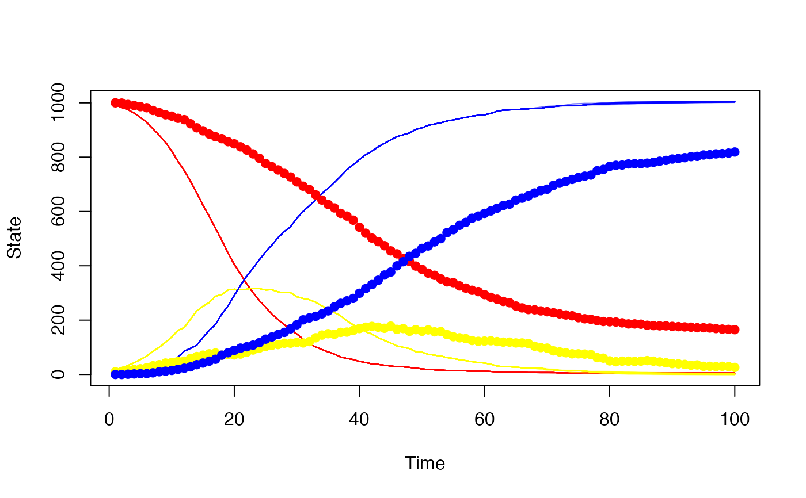

Create a particle_filter object for running
and interacting with a particle filter. A higher-level
interface will be implemented later.
modelThe dust model generator being simulated (cannot be re-bound)
n_particlesNumber of particles used (read only)
new()Create the particle filter
particle_filter$new( data, model, n_particles, compare, index = NULL, initial = NULL, n_threads = 1L, seed = NULL, gpu_config = NULL )
dataThe data set to be used for the particle filter,
created by particle_filter_data(). This is essentially
a data.frame() with at least columns step_start
and step_end, along with any additional data used in the
compare function, and additional information about how your
steps relate to time.
modelA stochastic model to use. Must be a
dust_generator object.
n_particlesThe number of particles to simulate
compareA comparison function. Must take arguments
state, observed and pars as arguments (though the arguments
may have different names). state is the simulated model state
(a matrix with as many rows as there are state variables and as
many columns as there are particles, data
is a list of observed data corresponding to the current
time's row in the data object provided here in the
constructor. pars is any additional parameters passed
through to the comparison function (via the pars
argument to $run). Alternatively, compare can be NULL
if your model provides a built-in compile compare function
(if model$public_methods$has_compare() is TRUE), which may
be faster.
indexAn index function. This is used to compute the
"interesting" indexes of your model. It must be a function of
one argument, which will be the result of calling the
$info() method on your model. It should return a list
with elements run (indices to return at the end of each
run, passed through to your compare function) and state
(indices to return if saving state). These indices can overlap
but do not have to. This argument is optional but using it will
likely speed up your simulation if you have more than a few
states as it will reduce the amount of memory copied back and
forth.
initialA function to generate initial conditions. If
given, then this function must accept 3 arguments: info
(the result of calling $info() as for index),
n_particles (the number of particles that the particle
filter is using) and pars (parameters passed in in the
$run method via the pars argument). It
must return a list, which can have the elements state
(initial model state, passed to the particle filter - either a
vector or a matrix, and overriding the initial conditions
provided by your model) and step (the initial step,
overriding the first step of your data - this must occur within
your first epoch in your data provided to the
constructor, i.e., not less than the first element of
step_start and not more than step_end). Your function
can also return a vector or matrix of state and not alter
the starting step, which is equivalent to returning
list(state = state, step = NULL).
n_threadsNumber of threads to use when running the simulation. Defaults to 1, and should not be set higher than the number of cores available to the machine.
seedSeed for the random number generator on initial
creation. Can be NULL (to initialise using R's random number
generator), a positive integer, or a raw vector - see dust::dust
and dust::dust_rng for more details. Note that the random number
stream is unrelated from R's random number generator, except for
initialisation with seed = NULL.
gpu_configGPU configuration, typically an integer
indicating the device to use, where the model has GPU support.
An error is thrown if the device id given is larger than those
reported to be available (note that CUDA numbers devices from 0,
so that '0' is the first device, so on). See the method $gpu_info()
for available device ids; this can be called before object creation
as model$public_methods$gpu_info().
For additional control, provide a list with elements device_id
and run_block_size. Further options (and validation) of this
list will be added in a future version!
run()Run the particle filter
particle_filter$run( pars = list(), save_history = FALSE, save_restart = NULL, min_log_likelihood = NULL )
parsA list representing parameters. This will be passed as
the pars argument to your model, to your compare
function, and (if using) to your initial function. It must
be an R list (not vector or NULL) because that is what a
dust model currently requires on initialisation or $reset - we
may relax this later. You may want to put your observation and
initial parameters under their own keys (e.g.,
pars$initial$whatever), but this is up to you. Extra keys
are silently ignored by dust models.
save_historyLogical, indicating if the history of all
particles should be saved. If saving history, then it can be
queried later with the $history method on the object.
save_restartAn integer vector of time points to save
restart infomation for. These are in terms of your underlying time
variable (the time column in particle_filter_data()) not in
terms of steps. The state will be saved after the particle
filtering operation (i.e., at the end of the step).
min_log_likelihoodOptionally, a numeric value representing the
smallest likelihood we are interested in. If given and the particle
filter drops below this number, then we terminate early and return
-Inf. In this case, history and final state cannot be returned
from the filter. This is primarily intended for use with
pmcmc where we can avoid computing likelihoods that
will certainly be rejected. Only suitable for use where
log-likelihood increments (with the compare function) are always
negative. This is the case if you use a normalised discrete
distribution, but not necessarily otherwise.
A single numeric value representing the log-likelihood
(-Inf if the model is impossible)
run_begin()Begin a particle filter run. This is part of the
"advanced" interface for the particle filter; typically you will
want to use $run() which provides a user-facing wrapper around
this function. Once created with $run_begin(), you should take
as many steps as needed with $step().
particle_filter$run_begin( pars = list(), save_history = FALSE, save_restart = NULL, min_log_likelihood = NULL )
parsA list representing parameters. See $run() for details.
save_historyLogical, indicating if the history of all
particles should be saved. See $run() for details.
save_restartTimes to save restart state at. See $run() for
details.
min_log_likelihoodOptionally, a numeric value representing the
smallest likelihood we are interested in. See $run() for details.
An object of class particle_filter_state, with methods
step and end. This interface is still subject to change.
state()Extract the current model state, optionally filtering. If the model has not yet been run, then this method will throw an error. Returns a matrix with the number of rows being the number of model states, and the number of columns being the number of particles.
particle_filter$state(index_state = NULL)
index_stateOptional vector of states to extract
history()Extract the particle trajectories. Requires that
the model was run with save_history = TRUE, which does
incur a performance cost. This method will throw an error if
the model has not run, or was run without save_history = TRUE. Returns a 3d array with dimensions corresponding to (1)
model state, filtered by index$run if provided, (2)
particle (following index_particle if provided), (3)
time point. If nested parameters used then returns a 4d array with
dimensions corresponding to (1) model state, (2) particle, (3)
population, (4) time point.
particle_filter$history(index_particle = NULL)
index_particleOptional vector of particle indices to return.
If nested parameters used then a vector will be replicated to a matrix
with number of columns equal to number of populations, otherwise a
matrix can be supplied.
If NULL we return all particles' histories.
restart_state()Return the full particle filter state at points back in time
that were saved with the save_restart argument to
$run(). If available, this will return a 3d array, with
dimensions representing (1) particle state, (2) particle index,
(3) time point. If nested parameters are used then returns a 4d array,
with dimensions representing (1) particle state, (2) particle index,
(3) population, (4) time point. This could be quite large, especially
if you are using the index argument to create the particle filter
and return a subset of all state generally. It is also
different to the saved trajectories returned by $history()
because earlier saved state is not filtered by later filtering
(in the history we return the tree of history representing the
histories of the final particles, here we are returning all
particles at the requested point, regardless if they appear in
the set of particles that make it to the end of the
simulation).
particle_filter$restart_state(index_particle = NULL)
index_particleOptional vector of particle indices to return.
If NULL we return all particles' states.
inputs()Return a list of inputs used to configure the particle
filter. These correspond directly to the argument names for the
particle filter constructor and are the same as the input
argument with the exception of seed, which is the state of
the rng if it has been used (this can be used as a seed to
restart the model).
particle_filter$inputs()
set_n_threads()Set the number of threads used by the particle filter (and dust model) after creation. This can be used to allocate additional (or subtract excess) computing power from a particle filter. Returns (invisibly) the previous value.
particle_filter$set_n_threads(n_threads)
n_threadsThe new number of threads to use. You may want to
wrap this argument in dust::dust_openmp_threads() in order to
verify that you can actually use the number of threads
requested (based on environment variables and OpenMP support).
# A basic SIR model included in the dust package gen <- dust::dust_example("sir") # Some data that we will fit to, using 1 particle: sir <- gen$new(pars = list(), step = 0, n_particles = 1) dt <- 1 / 4 day <- seq(1, 100) incidence <- rep(NA, length(day)) true_history <- array(NA_real_, c(5, 1, 101)) true_history[, 1, 1] <- sir$state() for (i in day) { state_start <- sir$state() sir$run(i / dt) state_end <- sir$state() true_history[, 1, i + 1] <- state_end # Reduction in S incidence[i] <- state_start[1, 1] - state_end[1, 1] } # Convert this into our required format: data_raw <- data.frame(day = day, incidence = incidence) data <- particle_filter_data(data_raw, "day", 4) # A comparison function compare <- function(state, observed, pars = NULL) { if (is.null(pars$exp_noise)) { exp_noise <- 1e6 } else { exp_noise <- pars$exp_noise } incidence_modelled <- state[1,] incidence_observed <- observed$incidence lambda <- incidence_modelled + rexp(length(incidence_modelled), exp_noise) dpois(incidence_observed, lambda, log = TRUE) } # Construct the particle_filter object with 100 particles p <- particle_filter$new(data, gen, 100, compare) p$run(save_history = TRUE) #> [1] -17249.82 # Our simulated trajectories, with the "real" data superimposed history <- p$history() matplot(data_raw$day, t(history[1, , -1]), type = "l", xlab = "Time", ylab = "State", col = "#ff000022", lty = 1, ylim = range(history)) matlines(data_raw$day, t(history[2, , -1]), col = "#ffff0022", lty = 1) matlines(data_raw$day, t(history[3, , -1]), col = "#0000ff22", lty = 1) matpoints(data_raw$day, t(true_history[1:3, , -1]), pch = 19, col = c("red", "yellow", "blue")) 